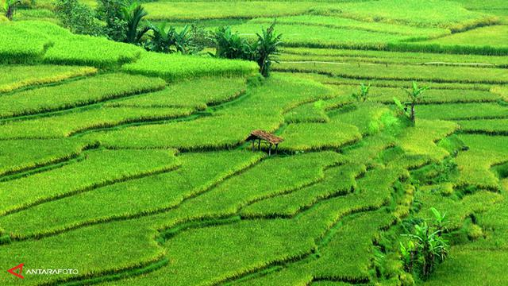

Hello World
Sawah adalah tanah yang digarap dan diairi untuk tempat menanam padi.[1] Untuk keperluan ini, sawah harus mampu menyangga genangan air karena padi memerlukan penggenangan pada periode tertentu dalam pertumbuhannya.
Berikut ini adalah gambar sawah:

Berikut ini adalah audio sawah:
Berikut ini adalah video sawah: